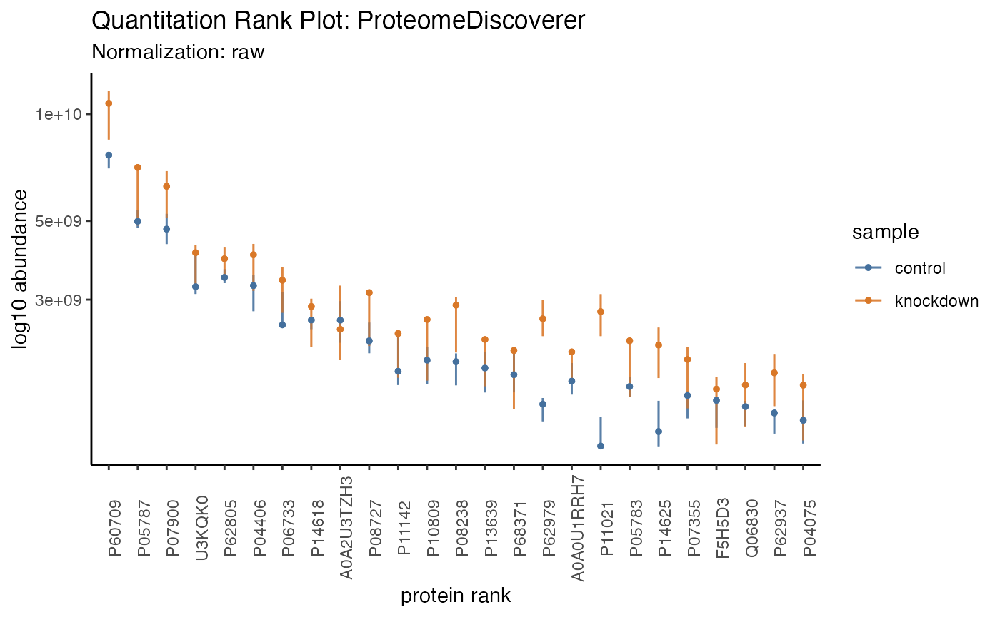

Summarizing
summarizing.RmdSummarizing proteomics data is vital to understanding the bigger
picture and conveying summary stats that set the tone for the larger
analysis. The results of each summary can be directed to via the
destination option to "print" on screen,
"save" to a file or "return" as a tibble.
Printing
The tidyproteomics data object can be printed to show a summary of the object contents.
hela_proteins
#>
#> ── Quantitative Proteomics Data Object ──
#>
#> Origin ProteomeDiscoverer
#> proteins (13.30 MB)
#> Quantitation 6 files
#> 2 samples (control, knockdown)
#> 8851 proteins
#> 4 log10 dynamic range
#> Accounting (4) match_between_runs num_peptides num_unique_peptides num_psms
#> Annotations (9) description gene_id_entrez gene_id_ensemble gene_name
#> biological_process cellular_component
#> molecular_function wiki_pathway
#> reactome_pathway
#> And these can expand to encompass additions generated through other operations.
hela_proteins %>% expression(knockdown/control) %>% enrichment(knockdown/control, .term = 'biological_process')
#> Warning in preparePathwaysAndStats(pathways, stats, minSize, maxSize,
#> gseaParam, : There are duplicate gene names, fgsea may produce unexpected
#> results.
#> ── Quantitative Proteomics Data Object ──
#>
#> Origin ProteomeDiscoverer
#> proteins (13.96 MB)
#> Quantitation 6 files
#> 2 samples (control, knockdown)
#> 8851 proteins
#> 4 log10 dynamic range
#> Accounting (4) match_between_runs num_peptides num_unique_peptides num_psms
#> Annotations (9) description gene_id_entrez gene_id_ensemble gene_name
#> biological_process cellular_component
#> molecular_function wiki_pathway
#> reactome_pathway
#> Analyses (1)
#> knockdown/control -> expression & enrichment (biological_process)
#> Summarizing
Groups
The tidyproteomics data object can summarize the quantitative and accounting data …
hela_proteins %>% summary()
#> ── Summary: global ──
#>
#> files protein_groups proteins peptides peptides_unique quantifiable CVs
#> 6 8851 8851 95877 83161 75.2 0.2493123
#> … using columns corrisponing to experimental meta-data …
hela_proteins %>% summary(by = 'sample')
#>
#> ── Summary: sample ──
#>
#> sample files protein_groups proteins peptides peptides_unique quantifiable
#> control 3 8851 8851 95877 83161 75.1
#> knockdown 3 8851 8851 95877 83161 75.3
#> CVs
#> 0.1536197
#> 0.2120776
#> … terms in the annotation meta-data …
hela_proteins %>% summary(by = 'biological_process')
#>
#> ── Summary: biological_process ──
#>
#> biological_process files protein_groups proteins peptides
#> cell communication 6 13 13 117
#> cell death 6 1 1 3
#> cell differentiation 6 3 3 22
#> cell growth 6 152 152 2485
#> cell organization and biogenesis 6 23 23 292
#> cell proliferation 6 8851 8851 95877
#> cellular component movement 6 10 10 72
#> cellular homeostasis 6 397 397 4071
#> coagulation 6 9 9 129
#> conjugation 6 232 232 2133
#> defense response 6 21 21 184
#> development 6 58 58 474
#> metabolic process 6 481 481 4536
#> peptides_unique quantifiable CVs
#> 110 83.8 0.2108179
#> 1 33.3 0.3560724
#> 22 18.2 0.4976946
#> 1322 46.2 0.2708449
#> 276 88.1 0.1892153
#> 83161 75.2 0.2493123
#> 55 60.4 0.2610407
#> 3707 82.6 0.2529687
#> 108 74.9 0.1999334
#> 1750 70.8 0.2561487
#> 162 71.5 0.3469895
#> 382 59.8 0.2715943
#> 3762 68.5 0.2548926
#> … and even terms in the accounting data …
hela_proteins %>% summary(by = 'num_peptides')
#> ℹ Too many variables, limiting to the first 25
#>
#> ── Summary: num_peptides ──
#>
#> num_peptides files protein_groups proteins peptides peptides_unique
#> 249 6 1 1 249 66
#> 213 6 1 1 213 213
#> 212 6 1 1 212 212
#> 187 6 1 1 187 4
#> 185 6 1 1 185 185
#> 175 6 1 1 175 2
#> 173 6 1 1 173 1
#> 148 6 1 1 148 148
#> 140 6 1 1 140 140
#> 138 6 1 1 138 3
#> 136 6 1 1 136 1
#> 128 6 1 1 128 122
#> 127 6 1 1 127 127
#> 125 6 1 1 125 125
#> 118 6 1 1 118 118
#> 115 6 3 3 345 226
#> 113 6 2 2 226 178
#> 112 6 1 1 112 1
#> 111 6 1 1 111 99
#> 109 6 2 2 218 186
#> 105 6 1 1 105 92
#> 100 6 1 1 100 100
#> 99 6 1 1 99 99
#> 98 6 1 1 98 98
#> 97 6 1 1 97 97
#> quantifiable CVs
#> 26.50 0.1870282
#> 100.00 0.2193391
#> 100.00 0.2337616
#> 0.00 NA
#> 100.00 0.1658465
#> 1.14 0.1468323
#> 0.00 NA
#> 100.00 0.2868730
#> 100.00 0.1665083
#> 2.17 0.2073938
#> 0.00 NA
#> 95.30 0.1735430
#> 100.00 0.1632790
#> 100.00 0.3371139
#> 100.00 0.2587364
#> 65.50 0.2369983
#> 78.80 0.2175716
#> 0.00 NA
#> 89.20 0.4634535
#> 85.30 0.2081467
#> 87.60 0.1678162
#> 100.00 0.2083985
#> 100.00 0.4285857
#> 100.00 0.1747993
#> 100.00 0.2289501
#> Contamination
In addition, the data can account for any type of contamination. If the key word “CRAP” is use then the data will partition out by Keratin, BSA, Trypsin and Other, so long as the protein descriptions contain CRAP and presumably originate from the CRAPome. However, any FASTA file, used at the data translation step (eg with ProteomeDiscoverer), and manipulated to contain CRAP in the description can be utilized.
hela_proteins %>% summary(contamination = 'CRAP')
#>
#> ── Summary: contamination ──
#>
#> sample replicate native BSA Keratin Other Trypsin sample_id
#> control 1 92.9% 3.54% 3.44% 0.0011% 0.098% 3771f11f
#> control 2 92.4% 3.82% 3.7% 0.000632% 0.119% 31ba33f4
#> control 3 92.3% 3.84% 3.73% 0.00139% 0.109% 307859c3
#> knockdown 1 92.3% 3.85% 3.72% 0.000916% 0.122% 35374f46
#> knockdown 2 93% 3.52% 3.46% 0.000619% 0.0632% 34f52571
#> knockdown 3 92.5% 3.73% 3.66% 0.00107% 0.0663% 323ee79a
#> import_file sample_file
#> p97KD_HCT116_20221202_chimerys_proteins.xlsx f1
#> p97KD_HCT116_20221202_chimerys_proteins.xlsx f4
#> p97KD_HCT116_20221202_chimerys_proteins.xlsx f5
#> p97KD_HCT116_20221202_chimerys_proteins.xlsx f2
#> p97KD_HCT116_20221202_chimerys_proteins.xlsx f3
#> p97KD_HCT116_20221202_chimerys_proteins.xlsx f6
#> Alternatively, any protein descriptor can also be use …
hela_proteins %>% summary(contamination = 'Trypsin')
#>
#> ── Summary: contamination ──
#>
#> sample replicate native Trypsin sample_id
#> control 1 99.9% 0.102% 3771f11f
#> control 2 99.9% 0.124% 31ba33f4
#> control 3 99.9% 0.113% 307859c3
#> knockdown 1 99.9% 0.126% 35374f46
#> knockdown 2 99.9% 0.0655% 34f52571
#> knockdown 3 99.9% 0.0688% 323ee79a
#> import_file sample_file
#> p97KD_HCT116_20221202_chimerys_proteins.xlsx f1
#> p97KD_HCT116_20221202_chimerys_proteins.xlsx f4
#> p97KD_HCT116_20221202_chimerys_proteins.xlsx f5
#> p97KD_HCT116_20221202_chimerys_proteins.xlsx f2
#> p97KD_HCT116_20221202_chimerys_proteins.xlsx f3
#> p97KD_HCT116_20221202_chimerys_proteins.xlsx f6
#> … and as such.
hela_proteins %>% summary(contamination = 'ribosome')
#>
#> ── Summary: contamination ──
#>
#> sample replicate native ribosome sample_id
#> control 1 99.8% 0.203% 3771f11f
#> control 2 99.8% 0.187% 31ba33f4
#> control 3 99.8% 0.195% 307859c3
#> knockdown 1 99.8% 0.209% 35374f46
#> knockdown 2 99.8% 0.201% 34f52571
#> knockdown 3 99.8% 0.2% 323ee79a
#> import_file sample_file
#> p97KD_HCT116_20221202_chimerys_proteins.xlsx f1
#> p97KD_HCT116_20221202_chimerys_proteins.xlsx f4
#> p97KD_HCT116_20221202_chimerys_proteins.xlsx f5
#> p97KD_HCT116_20221202_chimerys_proteins.xlsx f2
#> p97KD_HCT116_20221202_chimerys_proteins.xlsx f3
#> p97KD_HCT116_20221202_chimerys_proteins.xlsx f6
#> Visualizing
Currently two summary visualizations are implemented in tidyproteomics.
Counts
In a simple grouped barchart, proteins (individual, and groups) as well as peptides (all, unique) are displayed with the match-between-runs shown as the margin above the ms2 evidenced identifications.
hela_proteins %>% plot_counts()
Quantitation
In recent literature a summary of protein quantitation has been visualized as a rank-based dot-plot.
hela_proteins %>% plot_quantrank()
Additionally, this plot can be extended to highlight statistical differences via an unbiased all-pair-wise comparison, to give an anticipated view of how to guide downstream analyses.
hela_proteins %>% plot_quantrank(display_filter = 'log2_foldchange', display_cutoff = 2)
#> Warning: ggrepel: 32 unlabeled data points (too many overlaps). Consider
#> increasing max.overlaps
Filter to limit to the range c(low, high) and display
the protein ids.
hela_proteins %>% plot_quantrank(show_rank_scale = TRUE, limit_rank = c(1,25))